Features
Everything it does, and why.
Each feature exists because something went wrong without it, on a real four-monitor desk. This page says what it does, and what it protects you from.
Profiles and the screen map
A profile says which outlets are powered, and so which screens are on. Nothing more: the same profile hosts CAD, trading or development in turn, each with its own windows.
- All on is built in and always first: it powers every outlet, including ones added later.
- Your own profiles are ticked outlet by outlet, or by clicking the screens on the map. Their order is the order of the menu and of keys 1–9 in the picker.
- The screen map draws your monitors where Windows places them and at their physical size, read from each screen's EDID: a 27″ 4K and a 27″ QHD are the same size, as on the desk.
- Windows forgets a screen once its power is cut, and may shift the others. The app remembers the layout from a moment when every screen was on, and refuses to record one that does not add up.
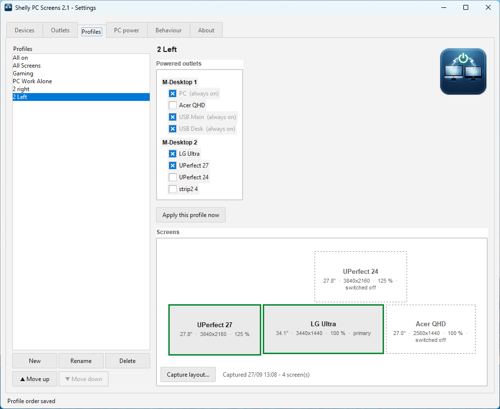
screenshots/profiles-tab.pngCapturing the layout
Capture layout... switches every screen on and draws each one as Windows detects it. Everything must be on, because Windows keeps one arrangement per combination of screens:
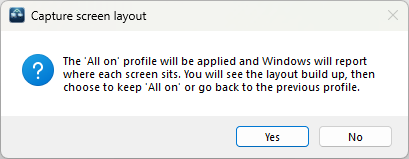
screenshots/capture-confirm.png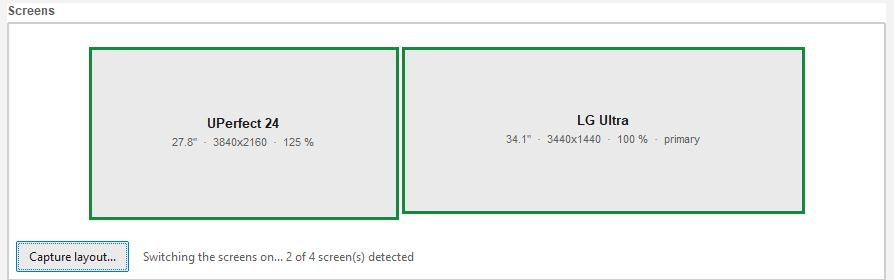
screenshots/capture-building.png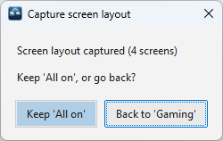
screenshots/capture-done.pngProfile shortcut
Ctrl+Win+Alt+P, from anywhere, opens a small window with one button per profile and the map of your desk.
| Key | Effect |
|---|---|
| ↑ ↓ | moves the selection; the map previews what that profile would give |
| 1 … 9 | applies one of the first nine profiles at once |
| click a screen | adjusts the selection for this one time, without changing any profile |
| Enter | applies |
| Esc | closes without changing anything |
A selection that would leave no screen at all cannot be applied: Apply greys out and says why. The shortcut itself can be changed; the app checks with Windows that it is free.
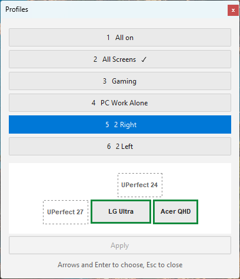
screenshots/profile-picker.pngFollows the PC: sleep, shutdown, boot
While the PC sleeps or is off, nothing runs on it to command anything. So the decision lives on the power strip: a small script watches the power drawn by the PC's own outlet. It keeps working with the app closed, or even uninstalled.
- Long off delay, short on delay. A Windows restart dips below the threshold for ten to fifteen seconds; ninety seconds lets it pass without a flicker. Three seconds on the way up is enough to see the BIOS.
- Calibrated from measurements. Start measuring records your PC's real levels (off, asleep, idle, busy) and suggests the thresholds from the largest gap between them.
- The boot screen is a fallback. At boot the last profile comes back. If it is missing or unreadable, the boot screen alone comes on: one screen is better than booting blind.
- Accessories choose. Screens follow the PC; a USB hub or speakers only if you tick it.
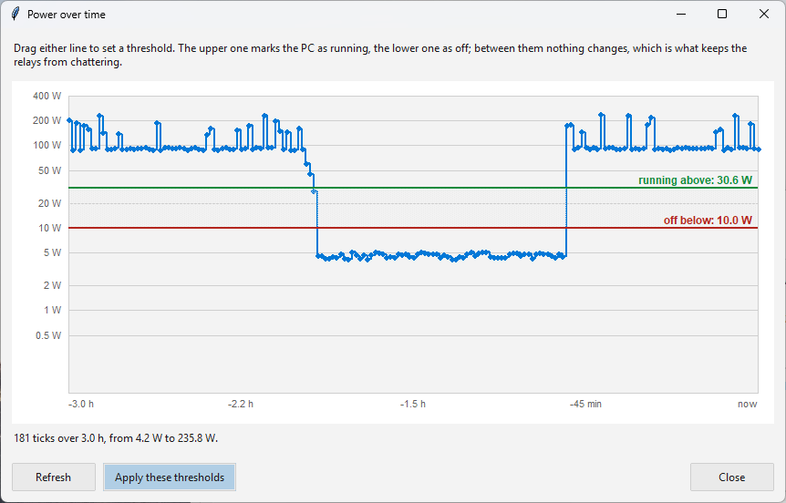
screenshots/power-chart.png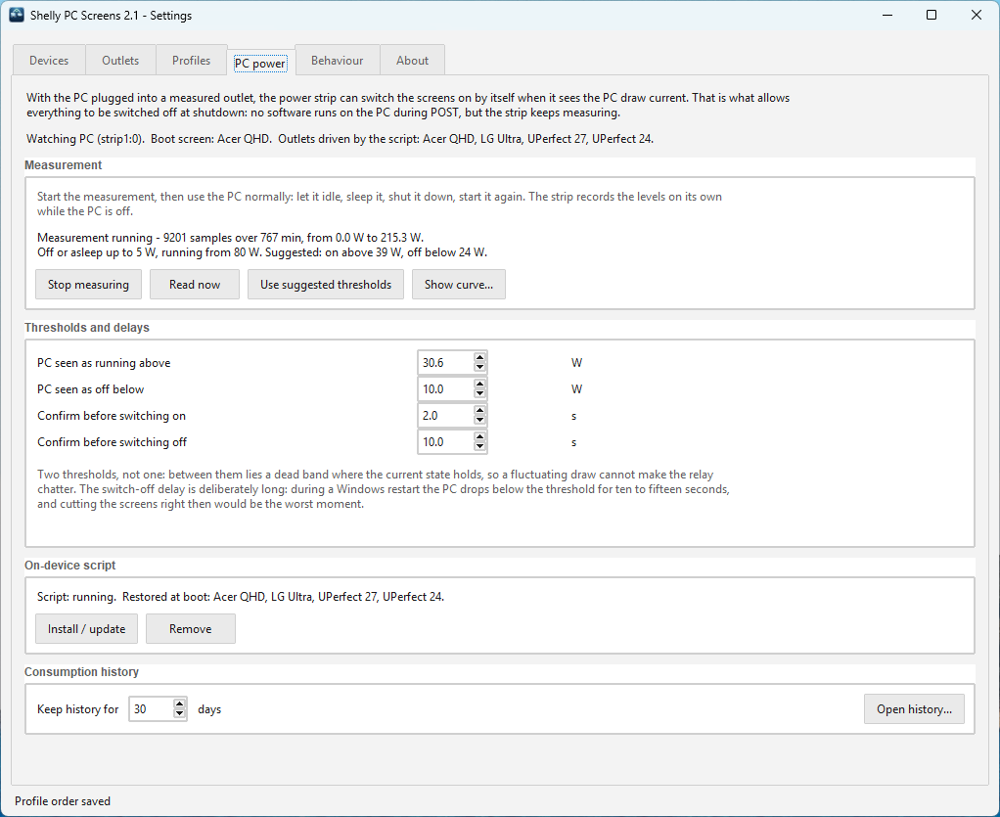
screenshots/pc-power-tab.pngSafeguards
Cutting the wrong outlet at the wrong moment costs work, or a boot you cannot get through. So the app refuses more than it allows.
The PC's own outlet: six locks
Critical outlets
Never switched off, by a profile or at shutdown. That is where the keyboard's USB hub belongs, so the BIOS and your PIN stay reachable.
Never zero screens
No profile, click or menu can leave every screen off: the boot screen is kept on, and the tray menu greys out the last lit screen.
On first, off next
A profile change switches the new screens on, waits for Windows to see them, and only then cuts the others.
Unknown means untouched
An outlet whose type is not set is left alone by every automation: what we don't know, we don't switch off.
Windows brought back
At the end of a profile change, a window left on a screen that went dark is moved to the nearest screen that is on, keeping its size, maximised again if it was, without stealing the focus. Windows straddling two screens, or deliberately parked off-screen by their program, are left alone.
Identify displays
The assistant cuts each screen outlet in turn and watches which monitor Windows loses, then powers it back. About twelve seconds per outlet; the others stay on meanwhile. Two identical monitors remain distinct, and the match survives reboots.
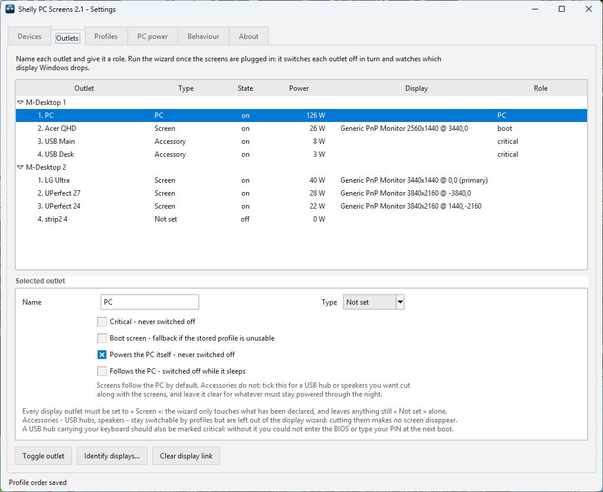
screenshots/outlets-tab.pngGhost screens
Some screens stay listed by Windows after their power is cut. HDMI commonly does this: the link keeps the screen's identity readable without power. The panel is dark, yet Windows still counts it on the desktop, so nothing disappears when its outlet is cut.
Already linked
The assistant recognises the behaviour, keeps the link and says so: ghost screen, link kept. It counts as matched, not as a failure.
Not linked yet
Nothing can prove which outlet feeds it. Once every other screen is linked, running the assistant again deduces the last pair.
Day to day
The app treats it as dark when its outlet is off: windows on it are brought back like on any switched-off screen.
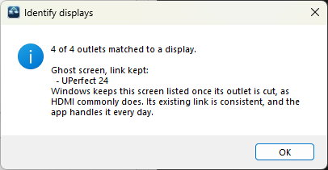
screenshots/identify-result.pngPower history
Every outlet, recorded from the readings the app already takes: nothing extra is asked of the devices. During sleep, the power strip keeps measuring the PC on its own, and the night fills in at wake-up.
- Zoom with the wheel, drag through time, 1 hour to 30 days at a glance.
- Minimum, average, maximum and energy used over what you see.
- Log or linear scale: sleep at 2 W and work at 200 W stay readable together.
- Export the visible period as standard CSV, or as CSV for Excel with your regional separators.
- A plain SQLite database that any tool can open.
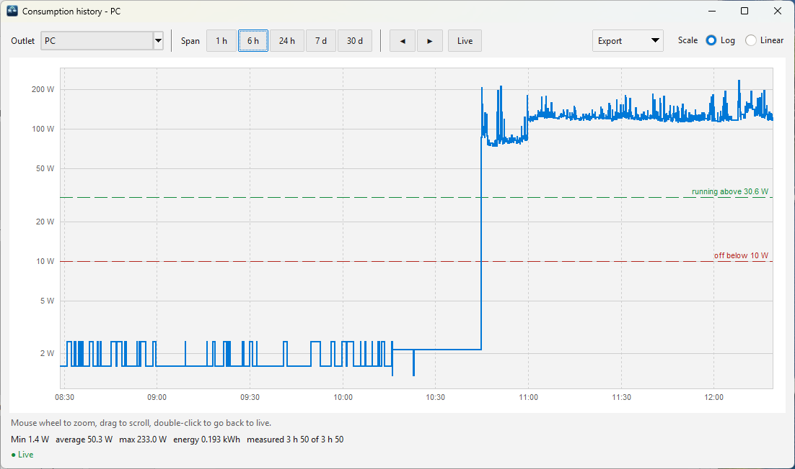
screenshots/history-window.png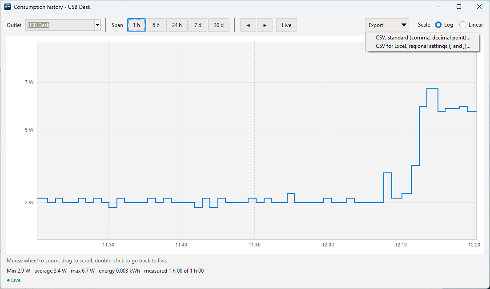
screenshots/history-export.pngDevices
Found automatically
By name on the network, then by known address, then by scan. Several power strips work side by side; one that stops answering never blocks the others.
New device wizard
A brand-new power strip joins your Wi-Fi from the app, with the networks the PC sees and their signal quality.
Signal in plain words
Each strip's Wi-Fi link: excellent, good, fair or weak, so you know before it starts dropping out.
Optional password
Set from the app, stored encrypted by Windows. If it is lost, the app says so and recalls the reset procedure.
LED rings & buttons
Dim the outlet rings, switch them off, or add a night mode, and detach buttons that should not be pressed.
Frozen meter detection
A known firmware fault freezes the power reading; the app notices and offers a harmless restart.
Only the services you use
Cloud, MQTT, Zigbee, KNX…: each one keeps a network stack and memory busy on the strip. Each is explained, and can be switched off.
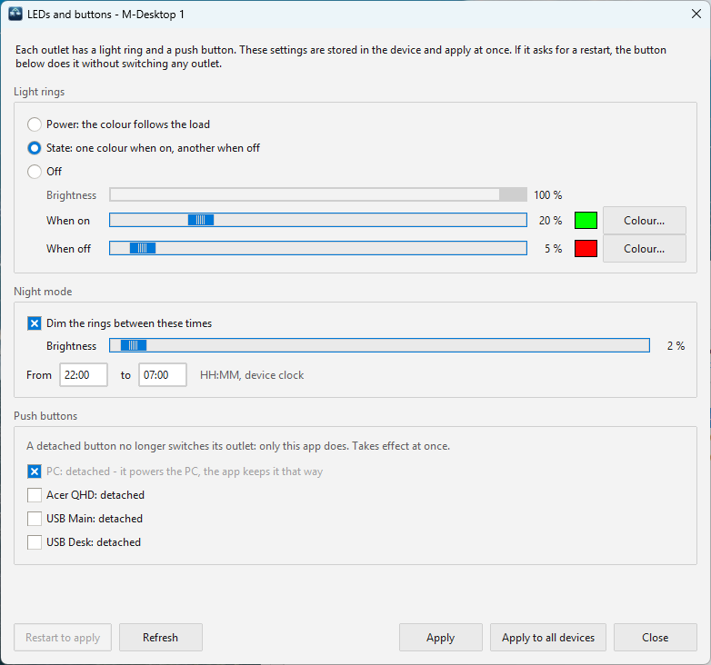
screenshots/leds-dialog.png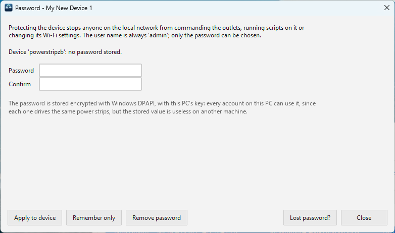
screenshots/password-dialog.png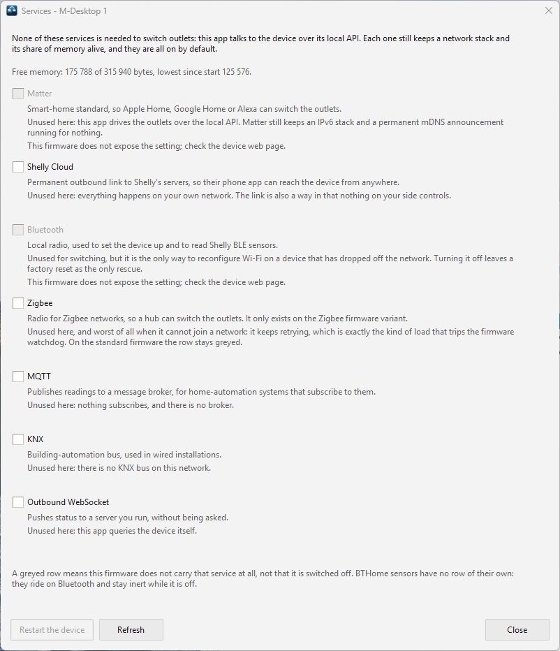
screenshots/services-dialog.png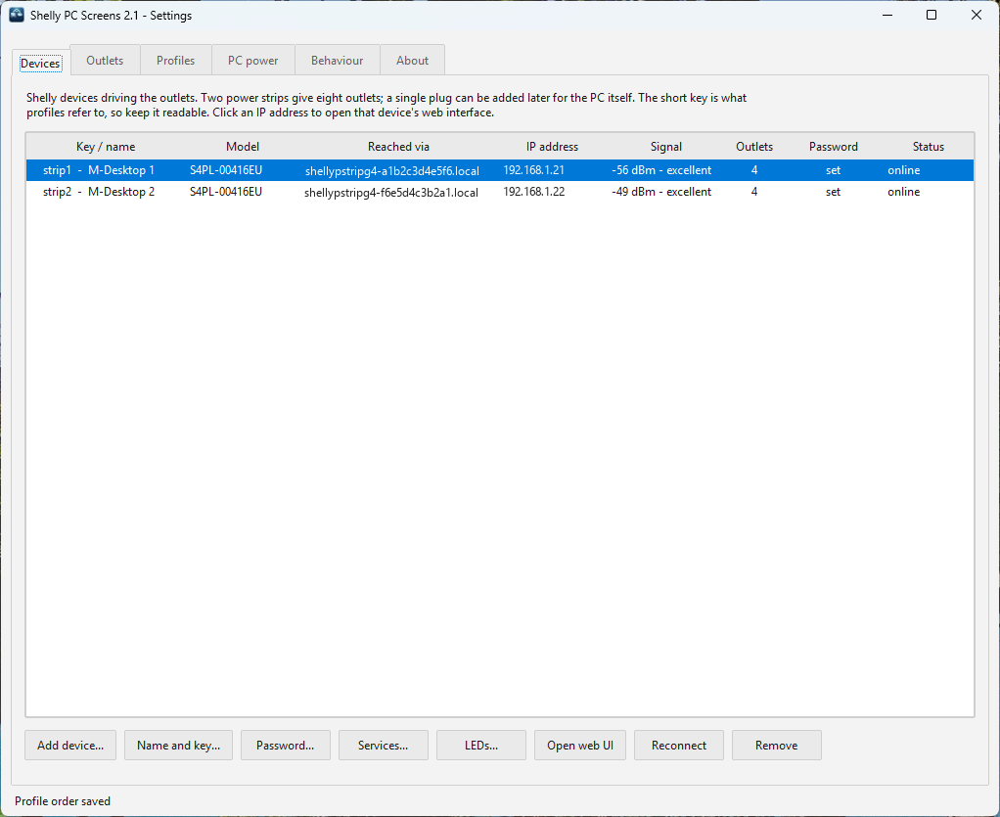
screenshots/devices-tab.pngThe tray icon
A dot on the icon tells the state at a glance; the tooltip gives the profile, the outlets on and the power drawn.
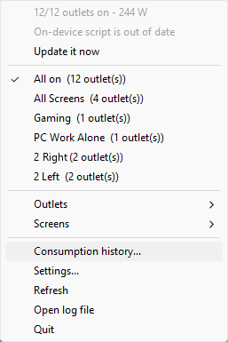
screenshots/tray-menu.pngSeveral accounts on one PC
The screens are shared, so the app is installed for every account. The hardware is common; its use is personal.
| Shared by the machine | Personal to each account |
|---|---|
| Power strips, outlets, roles, sleep and power detection, history | Profiles, shortcut, theme, language |
| Changed by an administrator, with one approval for a batch of changes | Changed freely |
With several accounts signed in, only the session on the screen drives the power strips. The others turn their icon blue and wait; control follows the screen when you switch user, without switching anything.
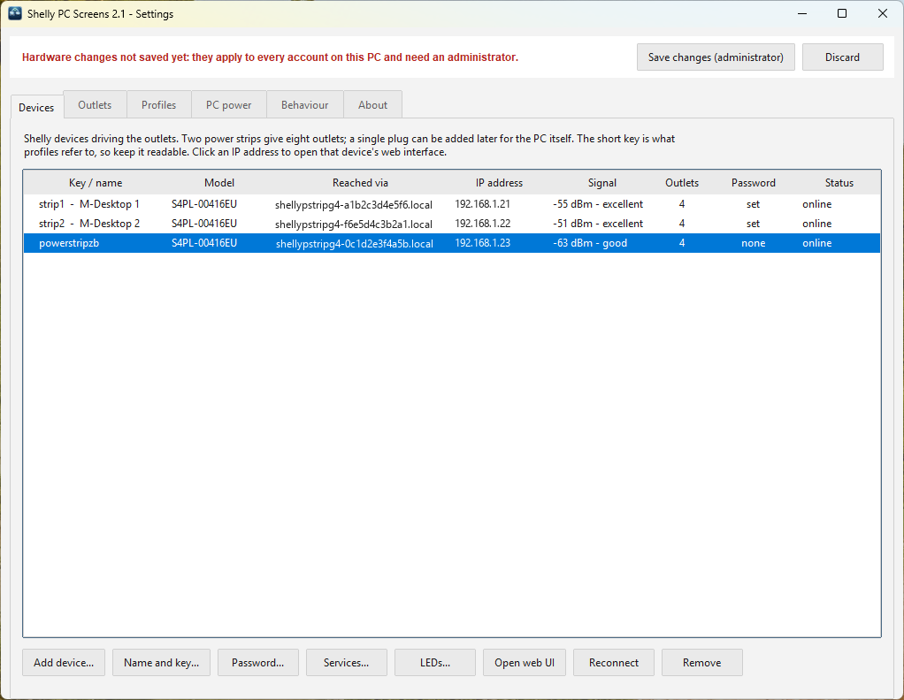
screenshots/admin-banner.pngLanguage and theme
English or French, or follow Windows. Light, dark, or follow Windows, with your Windows accent colour, adjusted for contrast.
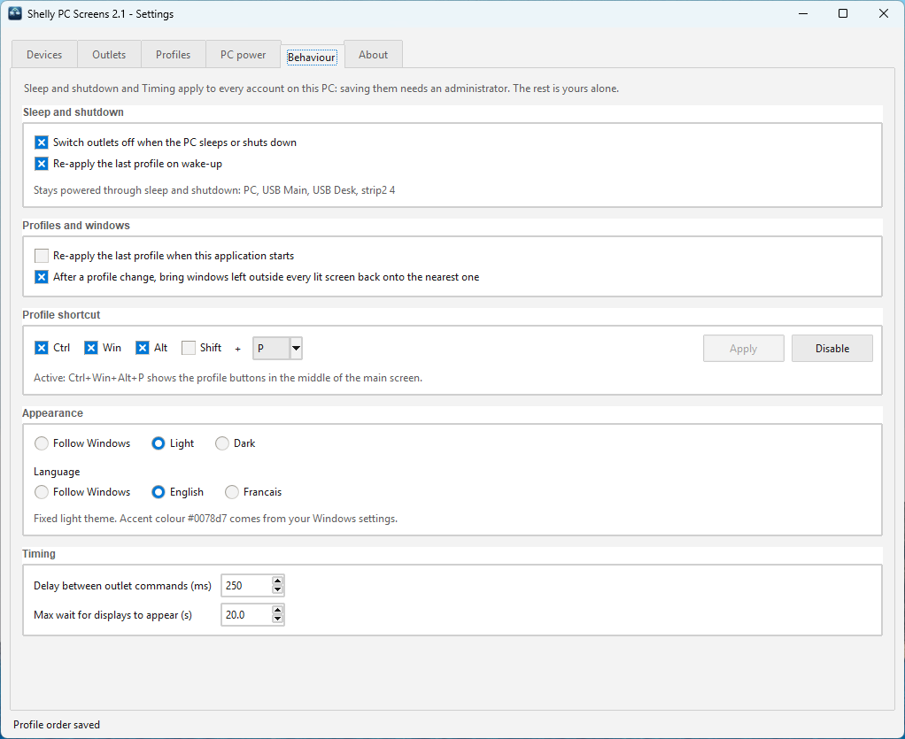
screenshots/behaviour-tab.png